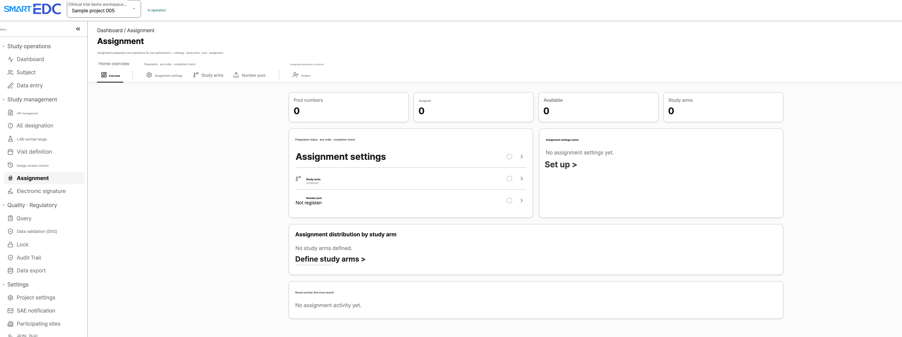
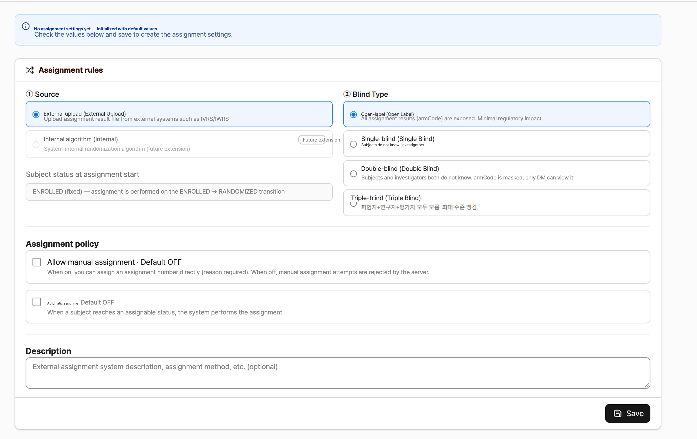
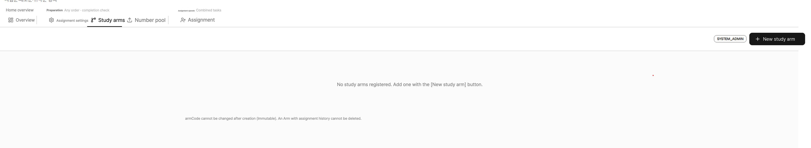
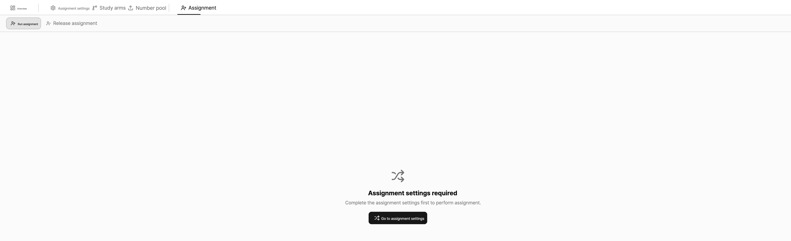
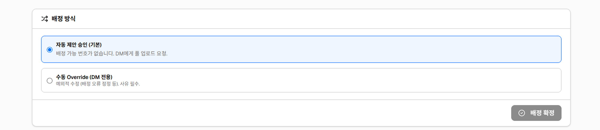
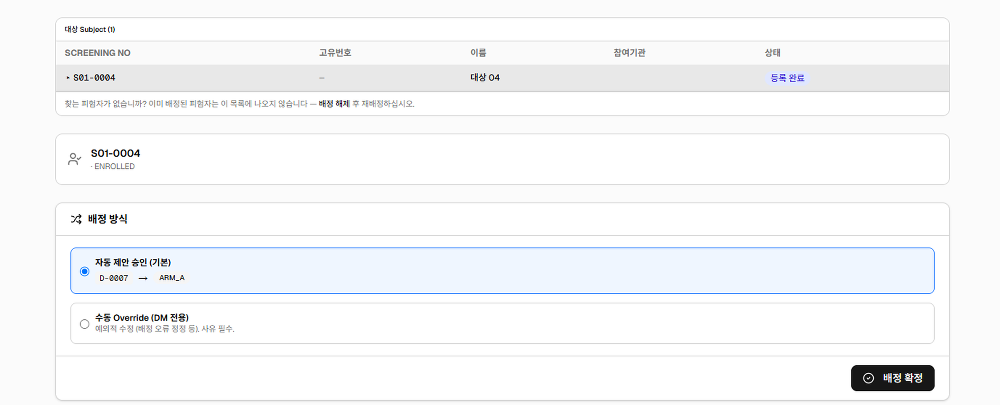
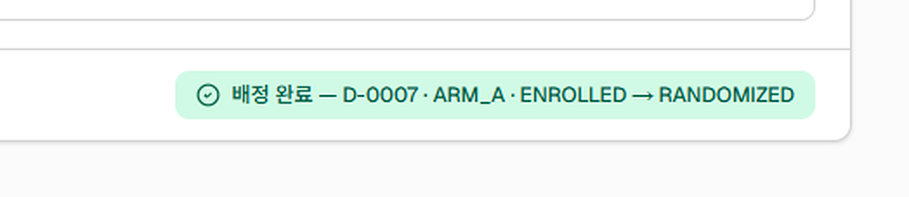
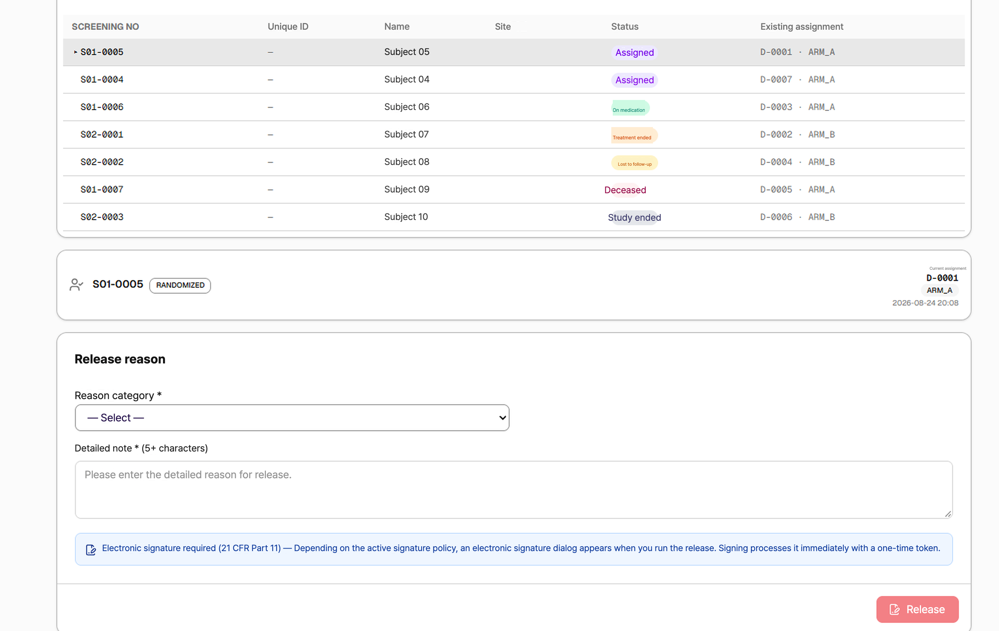

Assignment
SCR-RAND-007 · Assignment settings · Study arms · Number pool · Perform assignment · Release
Assignment overview
- 1.1Screen layout
- 1.2After preparation is complete
1.1Screen layout
Overview
This is the screen where you prepare for and carry out randomization. The horizontal tabs at the top are Overview · Assignment settings · Study arms · Number pool · Assignment, five in total. Selecting a tab changes the content in place without moving to another screen. The first three are preparation steps, and the last one is assignment operations.
Screen guide

Horizontal tabs — Switch among the five tabs. Tabs you have no permission for show a padlock and cannot be selected.
Set up > — Goes directly to the Assignment settings tab 2.1.
Define study arms > — Goes to the Study arms tab 2.2.
Selecting each row in Preparation status also takes you to the matching tab.
The Study management > Assignment item in the left menu is always available as an entry point. You can also enter from the Assignment widget on the role-based dashboard.
The navigation path is Dashboard / Assignment.
The small text above the tabs shows the groups: Home · Preparation (any order · completion check) · Assignment operations (combined tasks).
The four indicators are Pool numbers · Assigned · Available · Study arms. Before preparation, all of them show 0.
Preparation status — Shows whether each of the three preparation steps is complete. An empty circle means not complete, and a green check means complete. The order does not matter, so start with whichever is easiest.
Recent activity — Shows the five most recent assignment, release and upload records.
The subtitle “Assignment preparation and operations for your permissions” means the tabs and buttons you see differ from person to person.
Precautions
Must check Data corruption · Form cannot be completed
- • Currently, only system administrators can view the Assignment screen. It is temporarily closed because testing is not finished. Even data managers and principal investigators with assignment permission do not see the Assignment item in the left menu, and entering the address directly is blocked. This is not a permission setting issue, so do not look for it in permission management. Ask the system owner for the planned release schedule.
1.2After preparation is complete
Overview
Once you complete the three preparation steps, this same overview screen changes as shown here. The indicators fill with actual values, and the settings summary, the distribution by study arm and recent activity are filled in. During operation, you can tell how far the assignment has progressed from this screen alone.
Screen guide

The circles on the tabs change to a green check, which means that step's preparation is complete.
Indicators — Pool numbers (number of uploaded numbers) · Assigned (number already used) · Available (number left) · Study arms (count). When Available drops, you need to upload more numbers.
The small text under Preparation status changes to actual values, such as Settings complete · 2 defined · 8 registered.
Assignment settings summary — Shows the assignment method and blinding, along with the status. The “Subject assigned · method and blinding locked” in the screenshot means assignment has already started, so the settings can no longer be changed 2.1.
Assignment distribution by study arm — Shows assigned count / pool count and the target ratio. The bar shows the share of the pool used up, which is a different scale from the target ratio.
Recent activity — Shown as subject → study arm (assignment number). The badge on the right uses color to tell apart assignment, manual assignment, release and upload.
The title and navigation path are the same as before preparation.
Precautions
Must check Data corruption · Form cannot be completed
- • When Available reaches 0, no more assignments are possible. The Perform assignment screen blocks you with “No assignable numbers left,” so check this indicator regularly and upload more numbers to the pool in advance 2.3.
Preparation
- 2.1Assignment settings
- 2.2Study arms
- 2.3Number pool
2.1Assignment settings
Overview
This screen sets the rules for assignment. It is made of four blocks, and once you save, each setting locks in stages. Uploading the number pool locks the blinding, and when the first subject is assigned, the method also locks. That is why this is the screen you must set correctly first.
Screen guide

① Source (assignment method) — External upload is selected. This is the way you upload assignment results created by an external system, such as IVRS/IWRS, as a file.
② Blind Type (blinding) — Select one of: Open-label · Single-blind · Double-blind · Triple-blind. Under each option, it is written who can see the assignment results.
Allow manual assignment — Off by default. When on, you can assign a number directly from Perform assignment, and a reason is required. If it is off, the attempt itself is rejected 3.2.
Automatic assignment — Off by default. When on, the system performs the assignment the moment a subject becomes eligible for assignment.
④ Description — Record the name of the external assignment system or the assignment method. It is optional, but it is the only item you can still edit after locking.
Save — Creates the settings. The first save creates the assignment settings.
“No assignment settings yet — initialized with default values” — Check the values and save, and the settings are created at that point.
Internal algorithm (Internal) cannot be selected because it is planned for future expansion. Only external upload is supported for now, so you must upload a number pool.
Subject status at assignment start is fixed to ENROLLED (enrolled). It cannot be changed, and only subjects in enrolled status are eligible for assignment.
The higher the blinding level, the fewer people can see the assignment results. From double-blind onward, the study arm code is hidden, and only data managers can view it.
The two ③ Assignment policy options are both off by default.
Precautions
Must check Data corruption · Form cannot be completed
- • You cannot change the assignment method or the blinding later. Uploading the number pool locks the blinding, and the moment the first subject is assigned, the method is locked too. From then on, only the description can be edited. A lock notice appears on the screen at each stage, so save only after the assignment plan in the protocol is finalized.
2.2Study arms
Overview
Defines the groups into which subjects are divided. There are three types: study arm, control arm and placebo arm. For an upload to succeed, the armCode column in the number pool file must match the codes defined here, so it is safer to create the study arms before the number pool.
Screen guide

+ New study arm — Opens the window for adding a study arm. The fields are code (armCode) · name · type · target ratio.
The Study arms tab is selected. You can go straight to other preparation steps.
Before any study arm is registered, an empty-state message is shown. Once you register one, the screen changes to a table with the columns Code · Name · Type · Target ratio · Assigned count · Action.
Note below — “armCode cannot be changed after creation (Immutable). Arms with assignment history cannot be deleted.”
The badge at the top right shows your current role. Editing study arms requires the assignment settings permission.
Precautions
Must check Data corruption · Form cannot be completed
- • Study arm codes cannot be changed after creation. The number pool file and the external assignment system must use the same codes, so enter the code exactly as written in the protocol. Once an assignment history exists, deletion is also blocked, and only the name, description and target ratio can be edited.
2.3Number pool
Overview
Upload the assignment number list created by the external assignment system as a CSV file. The only assignment method is external upload, so you cannot perform assignment if you skip this step. You do not have to upload everything at once. If numbers run short, upload more batches, and they are added to the existing ones.
Screen guide

Batch description — A name that tells this batch apart from others. Write it so you can tell what was uploaded, such as “e.g. Q3 new pool upload (+30 numbers).”
Select or drag a CSV file — When you choose a file, its contents are checked in advance and any problem rows are flagged.
Upload — Shown faded until you choose a file.
Recent batches — The list of batches uploaded so far. The number on the right is the count.
File format note — The required columns are randomNo (or assignmentNo) and armCode, and stratum is optional. armCode must match the code defined in study arms 2.2.
If no batch has been uploaded, an empty-state message is shown.
Precautions
Must check Data corruption · Form cannot be completed
- • The same assignment number cannot be uploaded twice. If a number is duplicated within the file, or overlaps with a number already uploaded, that row is filtered out. When you upload additional numbers, download and upload only the range the external assignment system has newly issued.
Assignment operations
- 3.1Perform assignment (when preparation is incomplete)
- 3.2Select subject and confirm assignment
- 3.3Release assignment
3.1Perform assignment (when preparation is incomplete)
Overview
The Perform assignment screen looks different depending on how far preparation has progressed. When something is missing, the screen tells you directly what is missing, so read the guidance and go back to that preparation step.
Screen guide


Perform assignment — Assigns an assignment number to a subject.
Release assignment — Withdraws an assignment number that has already been given 3.3. The two are switch buttons within the same tab.
If there are no assignment settings, you are blocked with Assignment settings required.
Go to assignment settings — Moves you straight to the settings tab from there 2.1.
If settings are done but the number pool is empty, the automatic suggestion area shows “No assignable numbers left. Request a pool upload from the DM.” 2.3.
In that state, Confirm assignment appears faded and cannot be selected.
Precautions
Easily misunderstood behavior
- • When assignment is blocked, check in this order: Preparation status on the overview, then the empty item, then that tab. The three preparation steps have no set order, but you cannot upload the number pool before the study arms, because the upload checks the study arm codes in the file.
3.2Select subject and confirm assignment
Overview
When everything is ready, the subjects eligible for assignment appear in a table, and when you choose one, the system suggests a number. Nothing is recorded until you confirm, so check the suggested number and study arm before you proceed.
Screen guide


Target subject — A list of subjects who can be assigned. Selecting a row changes the area below to that subject.
Approve auto-suggestion (default) — Shows the assignment number → study arm the system selected. The screenshot shows D-0007 → ARM_A.
Manual Override (DM only) — Assign a number directly. This is an exception for correcting an assignment error, and a reason is required. Check the notes below.
Confirm assignment — Records the assignment using the method you selected. The subject status changes from Enrolled → Assigned.
The number in parentheses is the number of subjects who can be assigned. Only subjects in Enrolled status appear.
“Can’t find the subject you need? Subjects who are already assigned do not appear in this list — release the assignment and assign again.”
The code and current status of the selected subject are shown again. Check here that this is the right person.
After you confirm, Assignment complete — assignment number · study arm · Enrolled → Assigned appears in green. There is no separate confirmation window.
Precautions
Must check Data corruption · Form cannot be completed
- • Manual assignment is available only when both the permission and the setting are in place. Even if you have data manager permission, it is disabled when the Allow manual assignment setting is turned off in Assignment settings. The screen tells you which of the two reasons applies. Because manual assignment undermines randomness, use it only in exceptional cases, such as correcting an assignment error.
3.3Release assignment
Overview
Withdraws an assignment number that has already been given. Use this to correct an assignment error or when a subject is judged ineligible, and a released number returns to a state where it can be used again. Because it is recorded in the audit trail, the reason must be documented carefully, and depending on project settings, an electronic signature is required.
Screen guide

Select target subject — All assigned subjects appear. Selecting a row changes the area below to that subject.
Reason category * — Choose one of four: Assignment error · Patient judged ineligible · Protocol Amendment · Other.
Detailed note * — You must enter at least 5 characters. It remains in the audit trail as entered.
Release — You can select this only after all required fields are filled in. For a subject on medication, more fields must be filled in (see the notes below). If the settings require a signature, the electronic signature window appears as soon as you select it.
Status column — Shows subjects who are On medication, Treatment ended, Lost to follow-up, Deceased or Study ended, as well as Assigned. However, assignment cannot be released for terminal-status subjects, even if you select them (see the notes below).
Existing assignment column — Assignment number · study arm. Use it to check the release target.
The current assignment (number · study arm · assignment date and time) of the selected subject appears again on the right.
“Electronic signature required (21 CFR Part 11)” — Shown only in projects with an active signature policy. In projects without one, the release is processed right away without a signature.
Precautions
Must check Data corruption · Form cannot be completed
- • Subjects in terminal status cannot have their assignment released. If you select a subject who is Treatment ended, Lost to follow-up, Deceased or Study ended, the warning “Assignment release not allowed for Terminal status subjects” appears, and the Release button is not enabled. What appears in the list and what can be released are different.
- • To release a subject on medication, approval from another responsible investigator (PI) is required. Besides the reason category and detailed note, you must also specify on the screen the PI approver ID and the status the subject will be left in after release. If you handle it as early termination, you also choose a treatment end reason. Decide the approver in advance before you start.
Easily misunderstood behavior
- • Release itself is blocked depending on the project status. In the closed or archived stage, the Release button is not enabled even if you enter a reason. Release records cannot be edited or deleted.